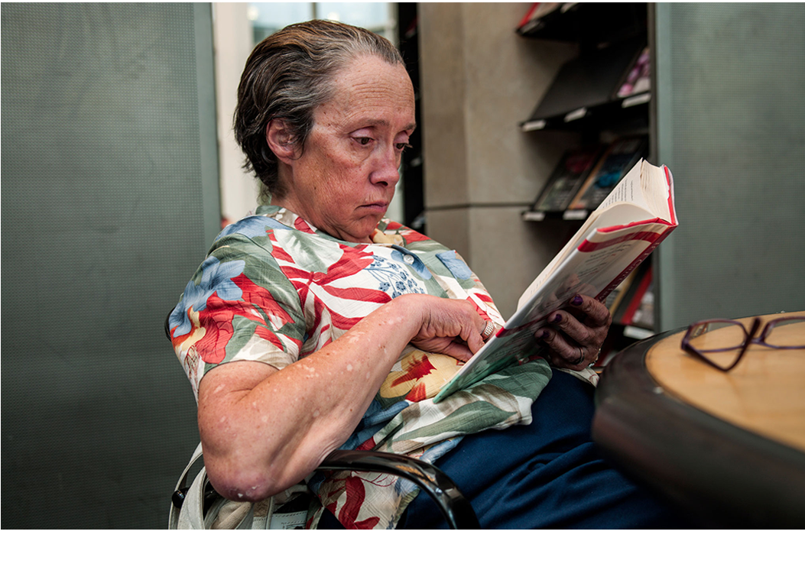

On a recent visit to the Sacramento library, the high number of homeless patrons I saw there surprised me.Seeing them in that quiet space, consumed by traditional media, I was struck by the difference between them and most of society with its 24/7 connection to streaming digital media. I began this project to take myself out of my own patterns and habits, to change my perspective, to observe, to listen, to understand, and to share this place of quiet.
